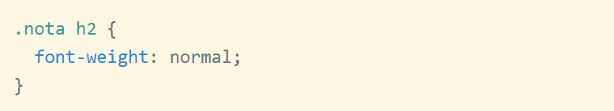

Los selectores en CSS nos permiten acceder a cualquier elemento o grupo de elementos, para aplicar estilos sobre el/ellos en una única declaración. Como su nombre indica, permiten seleccionar aquellos elementos sobre los que se van a aplicar las reglas de estilo.
Dentro del código CSS podemos usar selectores y aplicarles un conjunto de estilos determinado. Para ello escribimos el selector y colocamos los atributos de estilos encerrados entre llaves:
Existen selectores de lo más variado, que permiten ajustar de una manera.muy precisa qué elementos se desea seleccionar. Los más importantes son los siguientes:
Etiqueta: sirven para seleccionar todos los elementos de una misma etiqueta o tag HTML.
Clase: selecciona todos los elementos de una clase determinada. (Class de CSS).
Identificador: permiten seleccionar etiquetas individuales por el atributo Id de la etiqueta.
Atributo: permiten seleccionar todas las etiquetas que tengan un atributo dado, o bien un atributo con un valor determinado.
Además, los selectores se pueden combinar entre sí para conseguir selectores mucho más precisos: Estos selectores obtienen las imágenes que tengan el atributo alt y los párrafos que tengan la clase "desactivado".
También podemos relacionar los selectores con un espacio y entonces el significado cambia totalmente, ya que se estaría indicando que un elemento tiene que estar dentro de otro. Este selector aplicaría estilos a todos los elementos h2 que estén dentro de contenedores que tienen la clase "nota".
También podemos combinar los selectores de CSS usando una coma. Entonces estamos indicando que los atributos de estilo deben aplicarse a los dos selectores por separado. Así estaríamos indicando que queremos aplicar estilos sobre todos los párrafos y todas las divisiones con la clase "bloque".